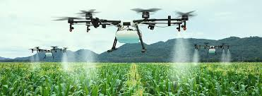

Oportunidades que a cidade trás para os moradores do campo
HOJE EM DIA, AS TECNOLOGIAS CRIADAS NAS CIDADES, ESTÃO TRAZENDO MAIS FACILIDADE PARA OS MORADORES DO CAMPO.
Um exemplo são os drones,que são pequenas máquinas às quais são acopladas câmeras fotográficas que geram imagens de alta resolução.
Que podem ser incluidos as atividades agricolas a seguir:
- Identificar regiões onde ocorreram falhas de plantio ou onde as plantas estão crescendo desuniformes;
- Utilizadas para mapeamento e demarcação de locais escolhidos para o plantio;
- Monitorar pragas e doenças no plantio;
- Realizar a pulverização de defensivos na plantação.
